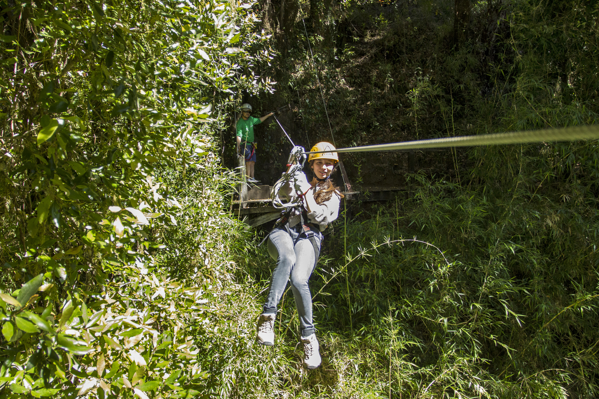

El descenso de ríos o balsismo,
conocido mundialmente como rafting,
es una actividad deportiva y recreativa
que consiste en recorrer el río en la
dirección de la corriente (río abajo),
por lo general sobre algún tipo de
embarcación o balsa.
PARACAIDISMO
El paracaidismo es la técnica de lanzamiento de
seres humanos u objetos desde cierta altura
usando un paracaídas para amortiguar el
impacto del aterrizaje.
MONTAÑISMO
Deporte que consiste en escalar altas montañas
utilizando utensilios apropiados, como cuerdas,
clavijas y mosquetones.
CANOPY

El Canopy es un nuevo deporte de aventura que tiene
como objetivo principal ofrecer una actividad única y
experiencia ecológica muy diferente deslizándose de un
punto a otro mediante cables horizontales con un equipo
completo de seguridad, pudiendo así sentir y vivir la
sensación de volar, además de apreciar el paisaje